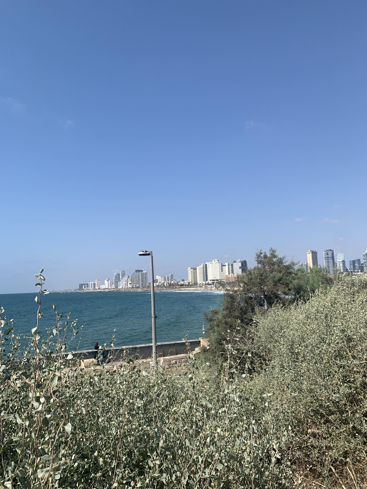

Yaman Ghasan
Software Engineer

Al-Aqsa Mosque
During my visit to Al-Aqsa Mosque, I was profoundly moved by its historical significance and the serene beauty of its ancient architecture.
Yaman Ghasan
Software Engineer

Haifa
My visit to Haifa left me enchanted by its breathtaking vistas, vibrant culture, and welcoming atmosphere, creating unforgettable memories of this coastal gem.
Yaman Ghasan
Software Engineer
Jaffa
Exploring the charming streets of Jaffa filled me with awe as I immersed myself in its rich history, vibrant art scene, and delightful culinary experiences.
Yaman Ghasan
Software Engineer

Acre ( Akko)
My time in Acre (Akko) was a captivating journey through centuries of history, where ancient ruins, bustling markets, and the tranquil seaside combined to create an unforgettable experience.
Yaman Ghasan
Software Engineer

Jericho
My visit to Jericho unveiled layers of history beneath its ancient walls, where the lush oasis, vibrant markets, and the iconic Mount of Temptation painted a picture of timeless allure.